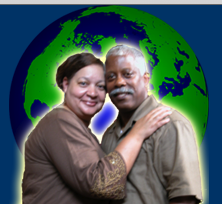

Bruce Wall Ministries/Prep Community Computer Center

Location:
Dorchester, MA
We are an Evangelical Christian church fellowship located in the Dorchester section of the City of Boston.
Lead by Pastors Bruce and Karin Wall.
Supported Projects
Program Development
Matthew Frank
8/2002 — 8/2003
Matt has been working on development both for the PREP Program of Bruce Wall Ministries and for TechMission, Inc.
Matt has developed a database of hundreds of potential funding sources for BWM and TechMission. He has narrowed down that database to a list of the top 20 prospects. We have used that database and research to provide information on grant opportunities to hundreds of other CTC’s through our E-mail list. Matthew has developed template grants for both PREP and TechMission that follow the Associated Grantmakers format and other standard formats. We have made available some of these templates to hundreds of other CTC’s through our E-mail list and on our website to assist them in developing resources and grantwriting.
Matthew has also been working with us in our partnerships with organizations to help provide resources to CTC’s. Matthew has provided feedback to other CTC’s on their grant applications for free computers to the Beaumont Foundation. In addition, he has assisted in the review process with the Beaumont Foundation and the Connections for Tomorrow consortium.
Matt has also been involved in many of the strategy discussions for sustainability for TechMission Inc. He has assisted us in applying for an AmeriCorps state application and an AmeriCorps national application. In addition, he has worked with us to secure resources from the Boston Foundation and is assisting us in developing other resources. He has also assisted us in applying for the Department of Education CTC grant, which we were awarded.
We plan to hire Matthew to work for TechMission after completion of his VISTA year.
CTC Program Building
Margaret Goodwyn
8/2002 — 8/2003
Margaret is developing a system of technical support for our computer center as well as a curriculum for computer certification classes.
Margaret has been progressing remarkably well in her VISTA year. She has progressing well in developing a system of technical support for our computer center. Margaret has developed a system where most of our computers are using the same drive image. This allows us to re-image computers in just a few minutes if any problems occur. Margaret has also been repairing computers donated to our computer center and has distributed 50 computers to individuals and organizations through an earn-a-computer program.
Margaret has developed a system where most of our computers are using the same drive image. This allows us to re-image computers in just a few minutes if any problems occur. Margaret has also been repairing computers donated to our computer center and should be distributing between 50-100 computers to individuals and organizations.
Margaret has also developed curriculum for our A+ certification class and tested it with over 15 students last semester. About 5 of her students have returned this semester to volunteer to teach classes. Margaret has also developed curriculum for our Microsoft Certified System Engineer courses. Last semester she developed curriculum for our Windows 2000 Server course, and this semester she developed curriculum for our Windows 2000 Networking course, with about 30 students in total between the two courses.
There have been no major difficulties for Margaret in her VISTA year. After completing her year, we have decided to hire Margaret as staff.
CTC Youth Program Building
Michelle Walson
8/2002 — 8/2003
During the year, Michelle developed curricula for using multimedia with youth. This involved developing curriculum for video production, graphic design and web design among other activities. She has documented this work and made it available online on her Website.
In addition, Michelle developed a curriculum and program for a computer club and youth volunteer program. We had over 20 youth participants in the computer club, and we had about 5 youth volunteer in our youth volunteer program. Michelle has documented this curriculum and made it available on her Website.
After her year as a VISTA, Michelle plans to go to grad school to study filmmaking.
CTC Program Building
Katie Peterson
4/2002 — 4/2003
She has done a significant amount of development on our database and system for tracking participants and volunteers. She has also helped coordinate our curriculum development for our classes.
Katie has now organized and put curriculum materials for over 20 classes on the Web. These classes range from Introduction to Computer to Certification classes. Katie has also developed a system for us to track donations and give receipts to individuals. She has also been helping to set up accounting for TechMission, Inc. In all of this, Katie has done an outstanding job of documenting her processes for others to take over.
Katie has also finished development on our database and system for tracking participants and volunteers. She developed reports which allow us to monitor how participants are progressing through programs. In addition, she has developed over 20 pages of documentation for her position for someone else to take over. She has been training another staff person to take over many of her duties.
Katie has also helped coordinate our curriculum development for our classes. She has now organized and put curriculum materials for over 20 classes on the Web. These classes range from Introduction to Computer to Certification classes. Katie has also developed a system for us to track donations and give receipts to individuals. She has also been helping to set up accounting for TechMission, Inc. In all of this, Katie has done an outstanding job of documenting her processes for others to take over.
Digital Media Curriculum Development
Michael Allwood
11/2001 — 11/2002
Michale’s responsibilities include creating technology curricula for our after school program and computer club.
In addition, Michael has spent much of the summer working with our teen summer job placement program New Horizons.
Most of Michael’s focus has been on developing curricula for media classes for youth.
He has done extensive work on curriculum for youth using digital music mixing programs like Hip Hop eJay and Acid Music. He is also working on curricula for youth for Web design and graphics design. He is in the process of finalizing his curriculum materials and training a replacement staff person.
Michael is also developing a curriculum for the computer club up and helping to teach classes.
Michael has developed training materials for youth in New Horizons and is also teaching classes. Michael has also been assisting with technical support and is still in the process of further developing our documentation around this. Because we cancelled our summer camp this year, Michael was not able to develop any curriculum for the camp.
CTC Assistance
Mary Pavan
9/2000 — 9/2001
One of the main goals of the PREP Computer Training program is to provide the technology training needed for inner-city residents to get well-paying jobs. To do this, one of our long-term goals is to provide training needed for professional computer certifications.
We would use the Americorps*VISTA member to help run the walk-in computer lab as well as to help assist with some of our classes. In the walk-in lab, the VISTA members would help answer people’s questions and assist them in their work. They would also work with the youth staff that we have working in the lab.
The VISTA member would also assist in teaching our classes on Saturdays. VISTA members could assist with whatever class that suits their technical capabilities.
The third area VISTA members couls assist in is in providing computer training to youth in our after school program during the afternoon a couple of times a week.
Depending on the VISTA member’s technical capabilities, they may also assist in the technical support of the lab as well as helping work with the youth in our youth-run Web design business. For each of these areas, we would provide the VISTA member with training and mentors to help guide them.
CTC Assistance
Christopher Tsang
9/2000 — 9/2001
One of the main goals of the PREP Computer Training program is to provide the technology training needed for inner-city residents to get well-paying jobs. To do this, one of our long-term goals is to provide training needed for professional computer certifications.
We would use the Americorps*VISTA member to help run the walk-in computer lab as well as to help assist with some of our classes. In the walk-in lab, the VISTA members would help answer people’s questions and assist them in their work. They would also work with the youth staff that we have working in the lab.
The VISTA member would also assist in teaching our classes on Saturdays. VISTA members could assist with whatever class that suits their technical capabilities.
The third area VISTA members couls assist in is in providing computer training to youth in our after school program during the afternoon a couple of times a week.
Depending on the VISTA member’s technical capabilities, they may also assist in the technical support of the lab as well as helping work with the youth in our youth-run Web design business. For each of these areas, we would provide the VISTA member with training and mentors to help guide them.
Related Content
None created yet!